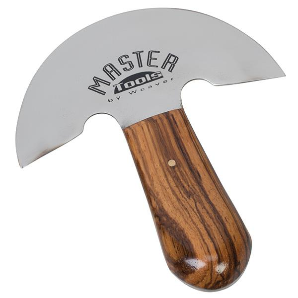

Description
Weaver Leather Supply offers reasonably priced leather and materials. Their tool offerings
are generally quality and reasonably priced, including both Weaver-branded hand tools and machines
(under the Master Tools brand) as well as from reputable manufacturers like C.S. Osborne.
Strengths
My Favorite Links